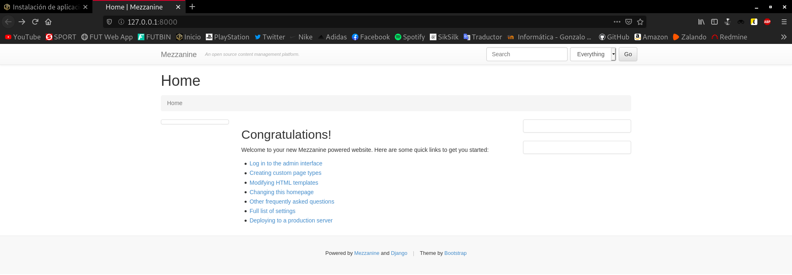
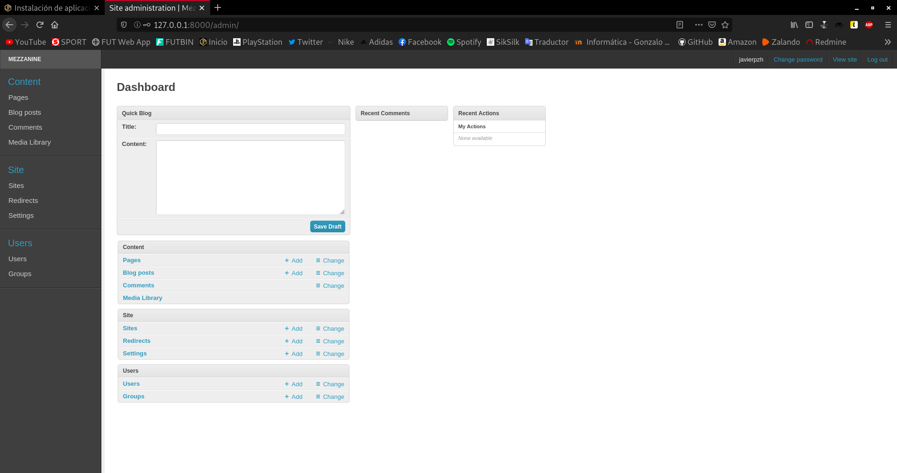
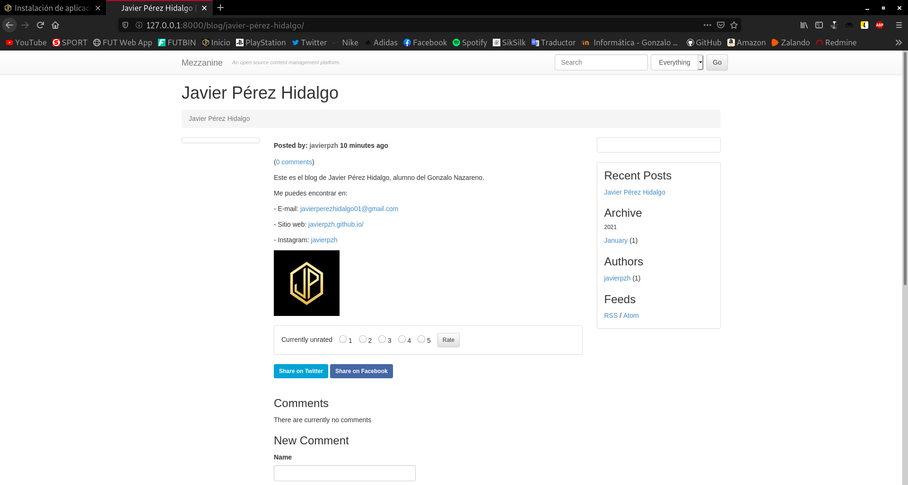

En esta tarea vamos a realizar la instalación de un CMS Python basado en Django. Puedes encontrar varios en el siguiente enlace.
Instala el CMS en el entorno de desarrollo. Debes utilizar un entorno virtual.
En primer lugar, me gustaría aclarar un poco cuál va a ser el entorno de trabajo, y es que el escenario sobre el que vamos a trabajar, ha sido construido en diferentes posts previamente elaborados. Los dejo ordenados a continuación por si te interesa:
- Creación del escenario de trabajo en OpenStack
- Modificación del escenario de trabajo en OpenStack
- Servidores OpenStack: DNS, Web y Base de Datos
Comprendido esto, voy a realizar la instalación/configuración en un entorno de desarrollo, que será mi propio equipo, donde utilizaré una base de datos sqlite3 como veremos posteriormente, y una vez que todo se encuentre completamente listo lo trasladaré a mi entorno de producción, es decir, al escenario de OpenStack, donde como ya sabemos, se encuentra una base de datos MySQL.
Utilizaremos un repositorio de GitHub en el que se van a ir guardando los ficheros que se generen durante la instalación del CMS. He creado un nuevo repositorio y lo voy a clonar en la dirección entornos_virtuales:
Para clonar dicho repositorio, obviamente necesitamos tener instalado el paquete git:
apt install git -y
Ahora sí, lo clonamos:
javier@debian:~/entornos_virtuales$ git clone git@github.com:javierpzh/Web-Python-OpenStack.git
En segundo lugar, vamos a crear el entorno virtual donde trabajaremos en el entorno de desarrollo, en mi caso, se encontrará en entornos_virtuales/Web_Python_OpenStack. Para crear un entorno virtual necesitamos tener instalado este paquete:
apt install python3-venv -y
Ya instalado, podemos crear el entorno virtual, y para ello, empleamos el siguiente comando:
javier@debian:~/entornos_virtuales/Web-Python-OpenStack$ python3 -m venv webpython
Una vez creado, vamos a activarlo mediante el siguiente comando:
javier@debian:~/entornos_virtuales/Web-Python-OpenStack$ source webpython/bin/activate
Si nos fijamos, vemos como el aspecto del prompt ha cambiado y ahora aparece el entorno virtual como activo:
(webpython) javier@debian:~/entornos_virtuales/Web-Python-OpenStack$
Para actualizar pip:
pip install --upgrade pip
Ya tendríamos el entorno virtual listo para trabajar con él.
Llegó el momento de decidir qué CMS instalaremos. En mi caso, he decidido instalar Mezzanine.
(webpython) javier@debian:~/entornos_virtuales/Web-Python-OpenStack$ pip install mezzanine
Una vez instalado, vamos a crear nuestra web/proyecto con el siguiente comando:
(webpython) javier@debian:~/entornos_virtuales/Web-Python-OpenStack$ mezzanine-project javierpzh
Hecho esto, podremos ver como nos ha creado una carpeta con el nombre que hayamos decidido establecerle a nuestro proyecto. Dentro de esta carpeta podremos encontrar varios directorios/ficheros, pero el que nos interesa en este punto es el llamado javierpzh/local_settings.py, ya que, en él se encuentra la configuración básica de la base de datos.
(webpython) javier@debian:~/entornos_virtuales/Web-Python-OpenStack/javierpzh/javierpzh$ ls __init__.py local_settings.py settings.py urls.py wsgi.py
Si lo observamos, podremos apreciar como nos muestra los detalles de la base de datos que utilizará por defecto, que es una sqlite3:
DATABASES = {
"default": {
# Ends with "postgresql_psycopg2", "mysql", "sqlite3" or "oracle".
"ENGINE": "django.db.backends.sqlite3",
# DB name or path to database file if using sqlite3.
"NAME": "dev.db",
# Not used with sqlite3.
"USER": "",
# Not used with sqlite3.
"PASSWORD": "",
# Set to empty string for localhost. Not used with sqlite3.
"HOST": "",
# Set to empty string for default. Not used with sqlite3.
"PORT": "",
}
}
Vamos a utilizar esta, ya que nos viene por defecto, pero en el entorno de producción hay que recordar que estamos utilizando una MySQL, por tanto, habría que migrarla a este gestor.
Comentado estos detalles, vamos a proceder a crear la propia aplicación, y para ello nos vamos a situar en el primer directorio y haremos uso del siguiente comando:
(webpython) javier@debian:~/entornos_virtuales/Web-Python-OpenStack/javierpzh$ ls deploy fabfile.py javierpzh manage.py requirements.txt (webpython) javier@debian:~/entornos_virtuales/Web-Python-OpenStack/javierpzh$ python manage.py createdb Operations to perform: ... Running migrations: ... A site record is required. Please enter the domain and optional port in the format 'domain:port'. For example 'localhost:8000' or 'www.example.com'. Hit enter to use the default (127.0.0.1:8000): Creating default site record: 127.0.0.1:8000 ... Creating default account ... Username (leave blank to use 'javier'): javierpzh Email address: javierperezhidalgo01@gmail.com Password: Password (again): Superuser created successfully. ...
Veremos como tras introducir nuestra información de administrador, se ejecutarán una serie de procesos que desembocarán en la creación de la nueva aplicación.
Probaremos a acceder a ella desde nuestro navegador, para ello, antes necesitaremos ejecutar un proceso para servirla localmente:
(webpython) javier@debian:~/entornos_virtuales/Web-Python-OpenStack/javierpzh$ python manage.py runserver
.....
_d^^^^^^^^^b_
.d'' ''b.
.p' 'q.
.d' 'b.
.d' 'b. * Mezzanine 4.3.1
:: :: * Django 1.11.29
:: M E Z Z A N I N E :: * Python 3.7.3
:: :: * SQLite 3.27.2
'p. .q' * Linux 4.19.0-13-amd64
'p. .q'
'b. .d'
'q.. ..p'
^q........p^
''''
Performing system checks...
System check identified no issues (0 silenced).
January 15, 2021 - 13:08:21
Django version 1.11.29, using settings 'javierpzh.settings'
Starting development server at http://127.0.0.1:8000/
Quit the server with CONTROL-C.
Si accedemos a la dirección 127.0.0.1:8000:

Nuestra aplicación ya se está ejecutando. Ahora vamos a crear nuestro blog y vamos a personalizar un poco la web, para ello, nos logueamos:

Y así accederemos al panel de administración:

Una vez aquí, lo configuramos a nuestro gusto y una vez finalizado, podemos ver el resultado:

Es la hora de pasar esta aplicación al entorno de producción, para ello tendremos que realizar la copia de seguridad adecuada para restaurarla en este entorno. Como he comentado anteriormente, vamos a utilizar gestores de bases de datos distintos, por lo que, tendremos que buscar una solución para solventar esto.
Es por ello que existe el comando:
python manage.py dumpdata
Este comando lo que hace es imprimirnos por pantalla toda la información almacenada en la base de datos en formato .json, es decir, información que se puede restaurar en MySQL. Genial, ya tendríamos el "problema" solventado, ya que con guardar la salida de dicho comando en un fichero tendríamos la copia de seguridad. Pues eso es lo que vamos a hacer con el siguiente comando:
(webpython) javier@debian:~/entornos_virtuales/Web-Python-OpenStack/javierpzh$ python manage.py dumpdata> copiadeseguridad.json (webpython) javier@debian:~/entornos_virtuales/Web-Python-OpenStack/javierpzh$ ls copiadeseguridad.json deploy dev.db fabfile.py javierpzh manage.py requirements.txt static
En el entorno de desarrollo ya hemos terminado nuestro trabajo, y si recordamos, íbamos a utilizar un repositorio de GitHub para almacenar esta información y descargarla en el entorno de desarrollo.
Almacenamos todos los nuevos ficheros, entre los que se encuentra la copia de seguridad:
(webpython) javier@debian:~/entornos_virtuales/Web-Python-OpenStack$ git add * ... (webpython) javier@debian:~/entornos_virtuales/Web-Python-OpenStack$ git commit -am "aplicación mezzanine" ... (webpython) javier@debian:~/entornos_virtuales/Web-Python-OpenStack$ git push Enumerando objetos: 12103, listo. Contando objetos: 100% (12103/12103), listo. Compresión delta usando hasta 12 hilos Comprimiendo objetos: 100% (7709/7709), listo. Escribiendo objetos: 100% (12102/12102), 22.34 MiB | 4.51 MiB/s, listo. Total 12102 (delta 2845), reusado 12102 (delta 2845) remote: Resolving deltas: 100% (2845/2845), done. To github.com:javierpzh/Web-Python-OpenStack.git 69c2563..c41a53a main -> main